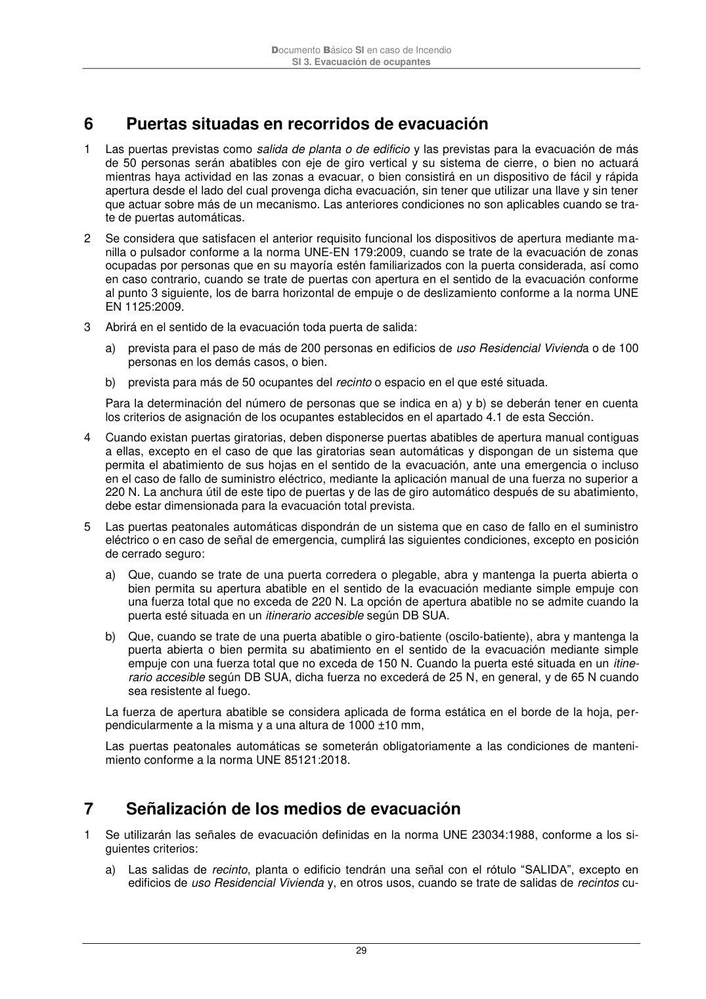

DB-SI · 6 Puertas situadas en recorridos de evacuación · 7 Señalización de los medios de evacuación · versión 2025-03-04
SHA256: 0a2e78cd62471d9cc5cfe2efbc6aa39fdbad73c124aea7b039f9de96c141e105 · página física 29 de 92 · métodos de encabezado
solo si están cotejados.
Formatos: Markdown · JSON de bloques · PDF p. 29 · imagen PNG
Documento Básico SI en caso de Incendio SI 3. Evacuación de ocupantes 29 6 Puertas situadas en recorridos de evacuación 1 Las puertas previstas como salida de planta o de edificio y las previstas para la evacuación de más de 50 personas serán abatibles con eje de giro vertical y su sistema de cierre, o bien no actuará mientras haya actividad en las zonas a evacuar, o bien consistirá en un dispositivo de fácil y rápida apertura desde el lado del cual provenga dicha evacuación, sin tener que utilizar una llave y sin tener que actuar sobre más de un mecanismo. Las anteriores condiciones no son aplicables cuando se tra- te de puertas automáticas. 2 Se considera que satisfacen el anterior requisito funcional los dispositivos de apertura mediante ma- nilla o pulsador conforme a la norma UNE-EN 179:2009, cuando se trate de la evacuación de zonas ocupadas por personas que en su mayoría estén familiarizados con la puerta considerada, así como en caso contrario, cuando se trate de puertas con apertura en el sentido de la evacuación conforme al punto 3 siguiente, los de barra horizontal de empuje o de deslizamiento conforme a la norma UNE EN 1125:2009. 3 Abrirá en el sentido de la evacuación toda puerta de salida: a) prevista para el paso de más de 200 personas en edificios de uso Residencial Vivienda o de 100 personas en los demás casos, o bien. b) prevista para más de 50 ocupantes del recinto o espacio en el que esté situada. Para la determinación del número de personas que se indica en a) y b) se deberán tener en cuenta los criterios de asignación de los ocupantes establecidos en el apartado 4.1 de esta Sección. 4 Cuando existan puertas giratorias, deben disponerse puertas abatibles de apertura manual contiguas a ellas, excepto en el caso de que las giratorias sean automáticas y dispongan de un sistema que permita el abatimiento de sus hojas en el sentido de la evacuación, ante una emergencia o incluso en el caso de fallo de suministro eléctrico, mediante la aplicación manual de una fuerza no superior a 220 N. La anchura útil de este tipo de puertas y de las de giro automático después de su abatimiento, debe estar dimensionada para la evacuación total prevista. 5 Las puertas peatonales automáticas dispondrán de un sistema que en caso de fallo en el suministro eléctrico o en caso de señal de emergencia, cumplirá las siguientes condiciones, excepto en posición de cerrado seguro: a) Que, cuando se trate de una puerta corredera o plegable, abra y mantenga la puerta abierta o bien permita su apertura abatible en el sentido de la evacuación mediante simple empuje con una fuerza total que no exceda de 220 N. La opción de apertura abatible no se admite cuando la puerta esté situada en un itinerario accesible según DB SUA. b) Que, cuando se trate de una puerta abatible o giro-batiente (oscilo-batiente), abra y mantenga la puerta abierta o bien permita su abatimiento en el sentido de la evacuación mediante simple empuje con una fuerza total que no exceda de 150 N. Cuando la puerta esté situada en un itine- rario accesible según DB SUA, dicha fuerza no excederá de 25 N, en general, y de 65 N cuando sea resistente al fuego. La fuerza de apertura abatible se considera aplicada de forma estática en el borde de la hoja, per- pendicularmente a la misma y a una altura de 1000 ±10 mm, Las puertas peatonales automáticas se someterán obligatoriamente a las condiciones de manteni- miento conforme a la norma UNE 85121:2018. 7 Señalización de los medios de evacuación 1 Se utilizarán las señales de evacuación definidas en la norma UNE 23034:1988, conforme a los si- guientes criterios: a) Las salidas de recinto, planta o edificio tendrán una señal con el rótulo “SALIDA”, excepto en edificios de uso Residencial Vivienda y, en otros usos, cuando se trate de salidas de recintos cu-
